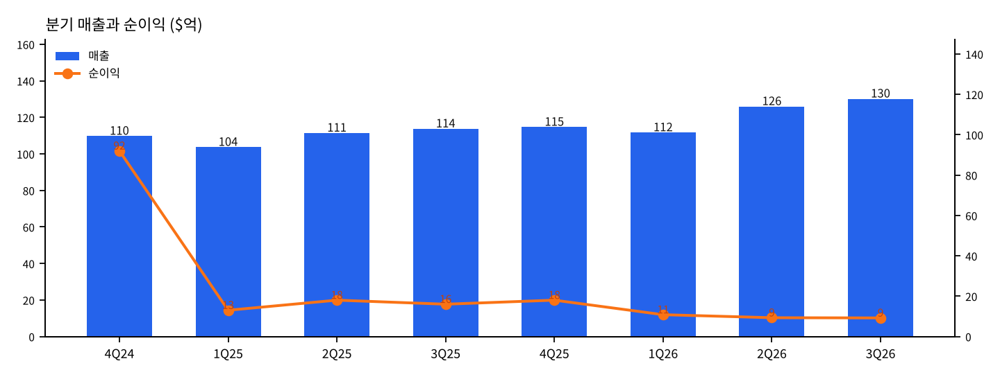
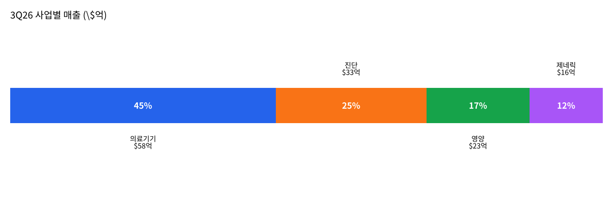
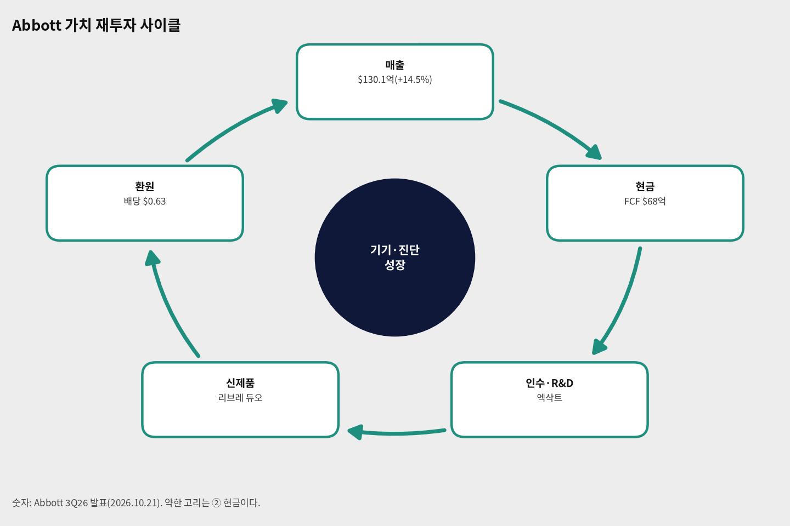

Abbott는 전기생리·리듬 관리·연속혈당측정(리브레) 같은 의료기기와 진단, 영양, 제네릭 의약품을 파는 회사다. 올해 3월 암 진단 회사 엑삭트 사이언스를 인수했다.
| 항목 | 내용 |
|---|---|
| 종목 | Abbott Laboratories (ABT) · NYSE · 헬스케어(의료기기) · 일리노이 Abbott파크 |
| 멀티플 | PER·PEG는 조정 EPS 기준(08 항목 표) |
| 최근 분기(3Q26) | 매출 $130.1억, 조정 EPS $1.42 |
| 가이던스(FY26) | 조정 EPS $5.50~5.55, 동일 기준 매출 약 +6% |
| 직원 수 | 약 115,000명(트레이딩뷰) |
| 직책 | 인물 | 역할·특징 |
|---|---|---|
| 회장·CEO | 로버트 포드(Robert Ford) | '여러 사업에서 균형 있는 성장'과 신제품 파이프라인을 강조 |
| CFO | (확인 필요) | (이번 조사에서 확인하지 못함) |
경영 스타일: '균형 포트폴리오 + 인수·분사 정리'. 암 진단 인수(엑삭트)와 영양 사업 분사로 구성을 바꾼다.
리브레(CGM)와 전기생리·리듬 관리 제품이 의료기기 성장을 이끈다.
엑삭트 사이언스를 인수해 진단 사업을 키운다.
다음 실적발표는 세 가지 질문에 답하는 자리다.
1. 의료기기 성장이 유지되나?
2. 엑삭트 인수 효과와 통합이 이익에 기여하나?
3. NEC 소송·합의 비용이 더 나오나?
한 줄 판정 규칙: 첫 질문(기기 성장)과 둘째 질문(진단 기여)이 유지되면 약한 고리(GAAP 비용)가 풀린다.
일정: 4Q26 실적 발표는 트레이딩뷰 기준 2027.01.27(확인 필요).
| 분기 | 매출 | 순이익 | EPS | 조정 EPS | 특이 사항 |
|---|---|---|---|---|---|
| 4Q24 | $109.7억 | $92.0억 | 5.29 | 1.34 | GAAP EPS에 대규모 일회성 이익(전년 기저) |
| 1Q25 | $103.6억 | $13.0억 | 0.74 | 1.09 | |
| 2Q25 | $111.4억 | $18.0억 | 1.03 | 1.26 | |
| 3Q25 | $113.7억 | $16.0억 | 0.91 | 1.30 | |
| 4Q25 | $114.6억 | $18.0억 | 1.03 | 1.50 | |
| 1Q26 | $111.6억 | $10.8억 | 0.62 | 1.15 | |
| 2Q26 | $125.9억 | $9.3억 | 0.53 | 1.31 | |
| 3Q26 | $130.1억 | $9.2억 | 0.53 | 1.42 | GAAP EPS $0.53, NEC 합의금 $6.7억 등 제외한 조정 EPS $1.42 |
3Q26 매출 $130.1억(+14.5%, 동일 기준 +7.0%), 순이익 $9.2억, GAAP EPS $0.53(전년 $0.94), 조정 EPS $1.42(+9.2%)(회사 발표 2026.10.21). 2025년 1분기 GAAP EPS는 일회성 이익으로 비정상적으로 높다. 매출·순이익·EPS(GAAP 희석)는 트레이딩뷰 스캐너, 조정 EPS는 트레이딩뷰 실적 페이지의 Reported 값이다. 분기 정렬은 오래된 분기→최신이다.

흐름 요약: 최근 분기 매출은 $130.1억로 전년 동기 $113.7억 대비 +14.4%, 순이익은 $9.2억(전년 $16.0억)다. 최근 4분기 GAAP EPS는 $2.71, 조정 EPS는 $5.38다.
| 사업 | 내용 | 3Q26 매출 | 비고 |
|---|---|---|---|
| 의료기기 | 전기생리·CGM 등 | $58.3억 | +6.9% |
| 진단 | 검사·암 진단 | $33.1억 | +46.7% |
| 영양 | 분유·성인 영양 | $22.6억 | +5.1% |
| 제네릭 의약품 | 신흥국 중심 | $16.1억 | +6.8% |

의료기기가 총매출의 약 45%(내 계산)다. 진단은 엑삭트 인수로 크게 늘었다.
Abbott는 '혁신적 건강 기술로 사람들이 더 완전한 삶을 살도록 돕는 것'을 목표로 한다.
| 축 | 내용 |
|---|---|
| 기기 | CGM·전기생리 |
| 진단 | 암 진단 확대 |
| 정리 | 영양 사업 분사 |

| 이동평균 | 값 | 종가 대비 | 위치 |
|---|---|---|---|
| 5일선 | $106.48 | -1.9% | 종가 아래 |
| 20일선 | $107.44 | -2.8% | 종가 아래 |
| 50일선 | $103.86 | +0.6% | 종가 위 |
| 100일선 | $104.36 | +0.1% | 종가 위 |
| 200일선 | $101.50 | +2.9% | 종가 위 |
52주 고가 $132.03(2025-11-18)·저가 $81.97(2026-05-11) 범위에서 종가 $104.48는 50일선, 100일선, 200일선을 웃돌고 5일선, 20일선은 밑돈다.
| 규칙 | 기준 | 현재 값 | 신호 |
|---|---|---|---|
| 장기 추세 필터 | 종가 vs 200일선 | $104.48 > $101.50 | 매수 |
| 중장기 교차 | 50일선 vs 200일선 | $103.86 > $101.50 | 매수 |
| 단기 교차 | 20일선 vs 50일선 | $107.44 > $103.86 | 매수 |
| 돈키언 채널 | 55일 고가 $117.07 / 저가 $95.06 | 중간값 $106.06 아래 | 매도 |
| 1개월 모멘텀 | 21거래일 수익률 | +2.0% (기준 $102.45) | 매수 |
| 3개월 모멘텀 | 63거래일 수익률 | -8.5% (기준 $114.14) | 매도 |
| 6개월 모멘텀 | 126거래일 수익률 | +18.2% (기준 $88.38) | 매수 |
| 12개월 모멘텀 | 252거래일 수익률 | -19.6% (기준 $130.03) | 매도 |
| 종합 (8개 평균) | +0.25 | 매수 |
해석: 매수 신호 5개(장기 추세 필터, 중장기 교차, 단기 교차, 1개월 모멘텀, 6개월 모멘텀), 매도 신호 3개(돈키언 채널, 3개월 모멘텀, 12개월 모멘텀). CTA 점수 +0.25(매수). 14일 ATR $3.18 (3.0%), 52주 고가 $132.03 · 저가 $81.97.
| 가격 | 기준 | 무엇이 바뀌나 |
|---|---|---|
| $130.03 | 12개월 모멘텀 기준가 | 종가가 이 가격 위면 12개월 신호 매수 |
| $117.07 | 55일 고가 | 돌파 시 채널 상단 갱신 |
| $114.14 | 3개월 모멘텀 기준가 | 종가가 이 가격 위면 3개월 신호 매수 |
| $106.06 | 돈키언 중간값 | 55일 채널 중간값 위/아래로 신호가 바뀜 |
| $102.45 | 1개월 모멘텀 기준가 | 종가가 이 가격 위면 1개월 신호 매수 |
| $101.50 | 200일선 | 종가가 이 선 위/아래인지로 장기 추세 신호가 바뀜 |
| $95.06 | 55일 저가 | 이탈 시 채널 하단 갱신 |
| $88.38 | 6개월 모멘텀 기준가 | 종가가 이 가격 위면 6개월 신호 매수 |
가격 수준은 신호가 바뀌는 기준선일 뿐 진입·청산 가격 제안이 아니다. 20일/50일 교차는 이동평균 자체가 움직여 단일 가격으로 표시하지 않았다. 일봉·주봉은 종가 기준 직접 계산(고저 데이터 미사용)이다.
| 악재 요인 | 내용 | 강도 |
|---|---|---|
| GAAP 비용 | NEC 합의금 $6.7억 | 중간 |
| 매출 가이던스 하향 | 의료기기 시장 둔화 보도 | 중간 |
| 인수 통합 | 엑삭트 통합 비용 | 중간 |
| 높은 멀티플 | PER 38.6배(트레이딩뷰, GAAP) | 높음 |
| 티커 | 회사 | PER(TTM) | PEG | P/S | EPS 성장(YoY) |
|---|---|---|---|---|---|
| ABT | Abbott | 19.4배 | 2.48 | 3.75배 | +8% |
| MDT | Medtronic | 24.8배 | 2.07 | 3.50배 | +12% |
| SYK | Stryker | 33.9배 | 1.45 | 4.64배 | +23% |
| BSX | Boston Scientific | 18.5배 | 0.69 | 2.97배 | +26% |
비교 결론: Abbott PER은 Medtronic보다 높고 Stryker와 비슷한 구간이다.
Abbott는 FCF 약 $68억(TTM)으로 배당과 인수 자금을 감당한다.
| 지표 | 값 | 출처 | 해석 |
|---|---|---|---|
| 현금·단기투자 | $43억 | 트레이딩뷰 스캐너(최근 분기) | |
| 총부채 | $312억 | 트레이딩뷰 스캐너(최근 분기) | |
| 순부채(부채−현금) | $269억 | 내 계산 | 현금 대비 부채 부담 |
| 잉여현금흐름(TTM) | $68억 | 트레이딩뷰 스캐너 | |
| TTM 매출 | $482억 | 트레이딩뷰 스캐너 |
| 기준 | 매출 | P/S | 비고 |
|---|---|---|---|
| 내 계산(종가 ÷ 최근 4분기 매출 합계) | $482.2억 | 3.75배 | 시총은 정렬용 데이터에서만 사용 |
| 동종(트레이딩뷰) | – | MDT 3.50배 · SYK 4.64배 · BSX 2.97배 | 11.19 |
해석: P/S 3.77배는 Stryker(4.64배)보다 낮다.
EBITDA는 영업활동의 현금 창출력을 보는 지표이고, PEG는 PER을 EPS 성장률로 나눈 값이다. EBITDA·FCF는 트레이딩뷰 TTM 값이다.
| 지표 | 값 | 산출 |
|---|---|---|
| EBITDA(TTM) | $108억 | 트레이딩뷰 스캐너 |
| EBITDA 마진 | 22.4% | EBITDA ÷ TTM 매출(내 계산) |
| FCF 마진 | 14.1% | FCF ÷ TTM 매출(내 계산) |
| PER(GAAP TTM) | 38.6배 | $104.48 ÷ $2.71 |
| PER(조정 TTM) | 19.4배 | $104.48 ÷ $5.38 |
| 방식 | PER | EPS 성장률 | PEG | 판정 |
|---|---|---|---|---|
| 조정 EPS (TTM $5.38) | 19.4배 | +8% ($4.99 → $5.38) | 2.48 | 기준 초과 |
| GAAP EPS (TTM $2.71) | 38.6배 | -66% ($7.97 → $2.71) | 산출 불가 | 참고 |
판정: 조정 EPS 기준 PEG 2.48 → 1.0 초과 PEG 기준은 1.0 이하 투자 적격, 0.5 이하 적극 매수다. EPS 성장률은 최근 4분기 EPS 합계를 직전 4분기 합계와 비교한 값(내 계산)이고, 일회성 항목이 있으면 조정 EPS 행을 함께 본다.

Abbott의 사이클은 기기·진단 매출 → 현금 → 인수·R&D → 신제품 → 환원이다.
| 고리 | 현재 숫자 | 고리 강도 | 약해지는 신호 |
|---|---|---|---|
| ① 기기·진단 매출 | $130.1억(+14.5%) | 강함 | 시장 둔화 |
| ② 현금 | FCF TTM $68억 | 보통 | 일회성 비용 |
| ③ 인수·R&D | 엑삭트 인수, 신제품 승인 | 진행 중 | 통합 |
| ④ 신제품 | 리브레 듀오 승인 | 강함 | 경쟁 |
| ⑤ 환원 | 분기 배당 $0.63 | 강함 | 투자 우선 |
사이클의 특징: 가장 약한 곳은 ② 현금이다. GAAP 비용이 이익을 눌렀다.